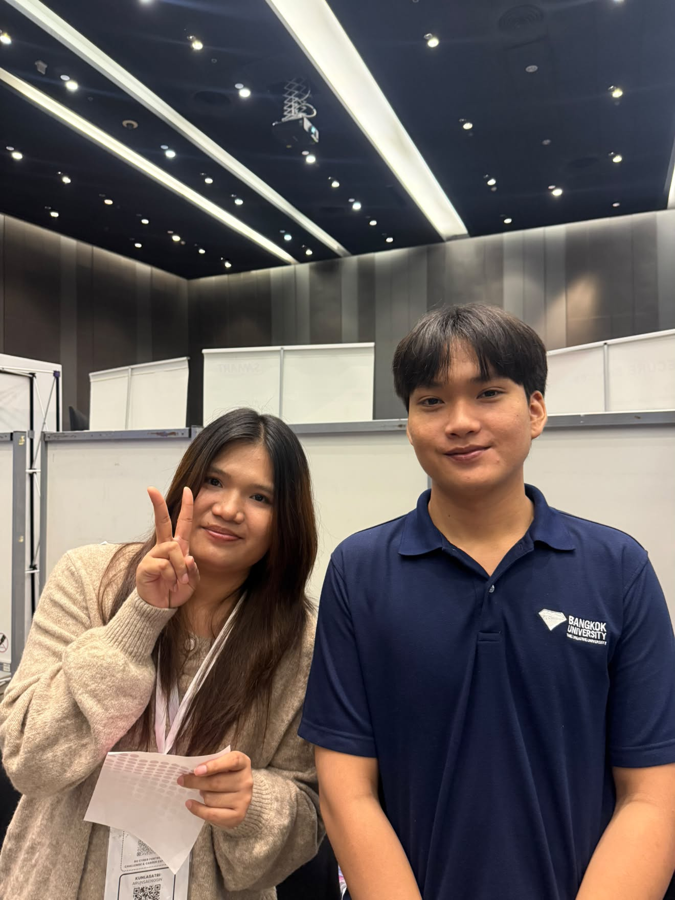
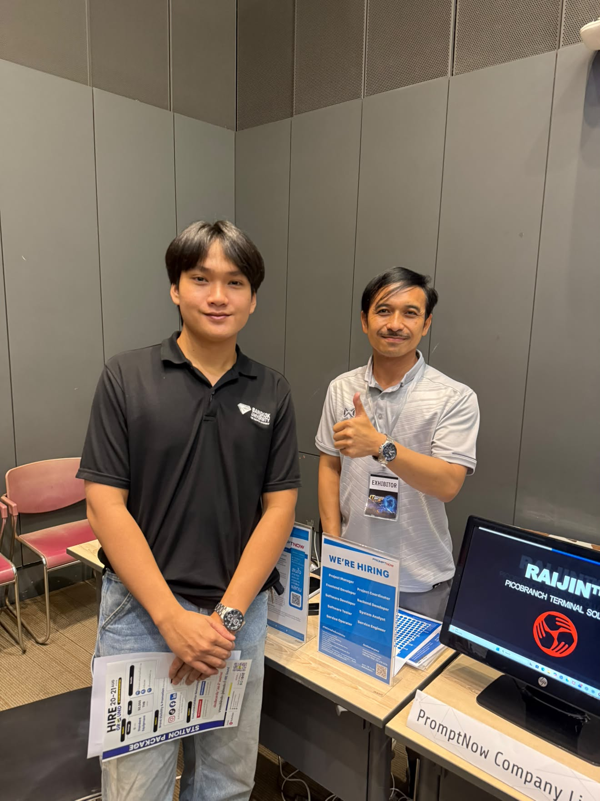
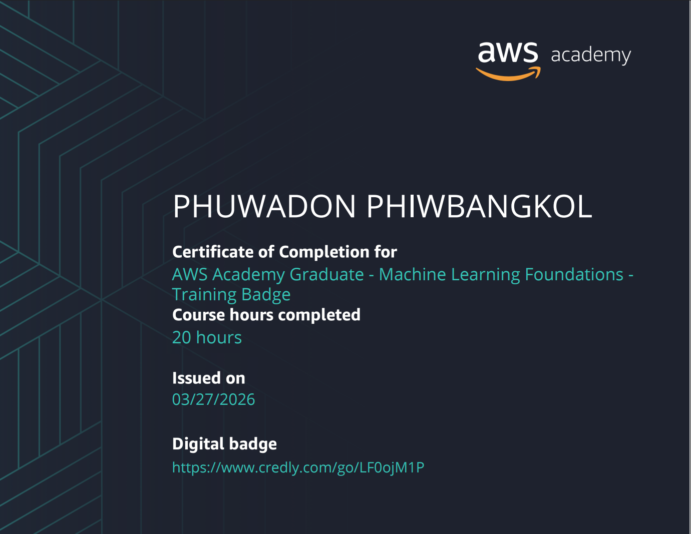
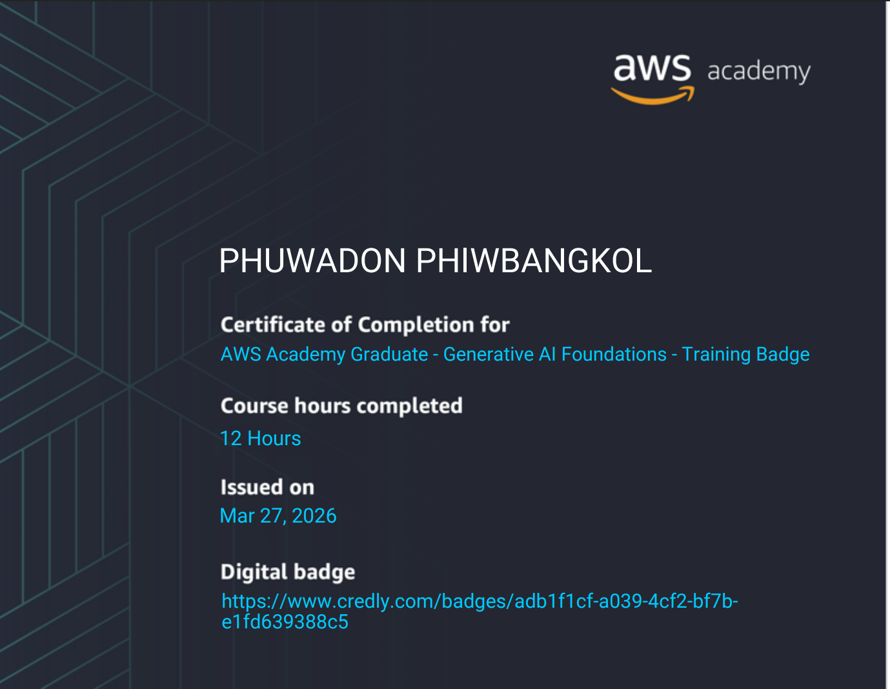
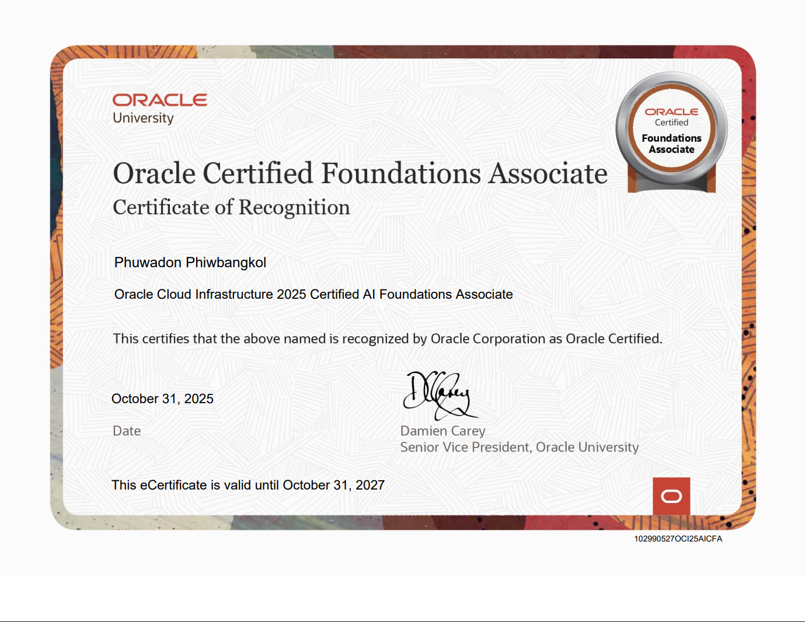
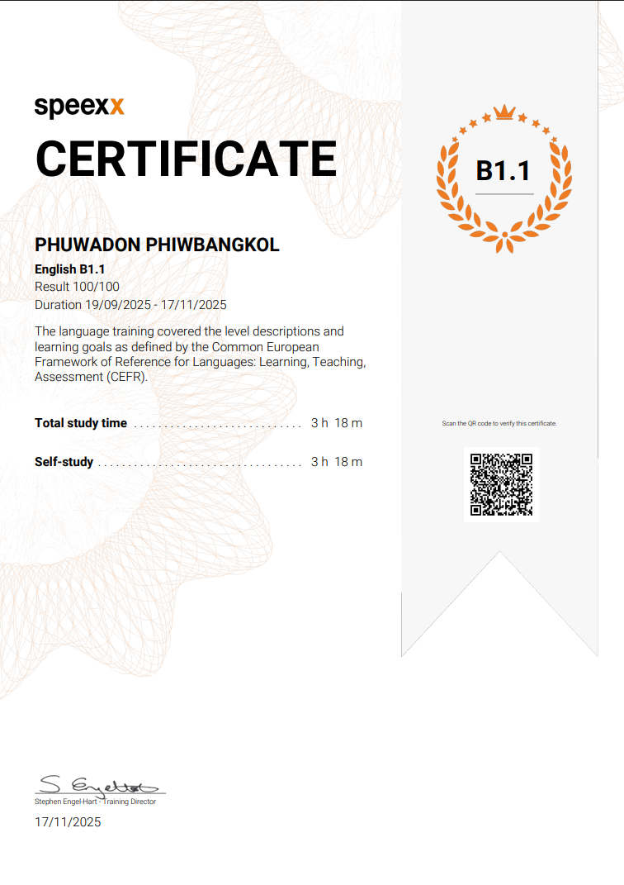

Portfolio
Hello, I'm Phuwadon
นักศึกษาชั้นปีที่ 4 สาขาวิทยาการคอมพิวเตอร์ (มุ่งเน้นวิทยาการข้อมูลและความมั่นคงปลอดภัยไซเบอร์) มหาวิทยาลัยกรุงเทพ หลงใหลในเทคโนโลยี IoT และอุปกรณ์ฮาร์ดแวร์ เชี่ยวชาญการต่อวงจร ESP32, ออกแบบผ่าน Fritzing และใช้ AI เป็นผู้ช่วยในการพัฒนาโค้ด กำลังมองหาโอกาสฝึกงานเพื่อนำทักษะฮาร์ดแวร์ไปต่อยอดด้านการเก็บข้อมูล และความปลอดภัยระดับอุปกรณ์ ในระบบการทำงานจริง
Profile
Phuwadon Phiwbangkol
นักศึกษาคณะเทคโนโลยีสารสนเทศ
สถานศึกษา
มหาวิทยาลัยกรุงเทพ
สาขา
วิทยาการคอมพิวเตอร์ มุ่งเน้นวิทยาการข้อมูลและความมั่นคงปลอดภัยไซเบอร์
สายงานที่สนใจ
IoT Developer, Hardware / Microcontroller, System Integrator
About Me
เกี่ยวกับฉัน
ประวัติโดยย่อ การศึกษา ทักษะและความเชี่ยวชาญ
ประวัติโดยย่อ
ผมเป็นนักศึกษาที่หลงใหลในเทคโนโลยี IoT มีความเชี่ยวชาญด้านการต่อวงจรและใช้งาน Microcontroller เช่น ESP32 จุดเด่นของผมคือการผสาน Hardware เข้ากับ Software โดยประยุกต์ใช้เครื่องมือ AI มาช่วยในการเขียนโค้ดและแก้ปัญหา ทำให้สามารถสร้างโปรเจกต์ต้นแบบ ได้อย่างรวดเร็วและใช้งานได้จริง ปัจจุบันกำลังมองหาที่ฝึกงานสาย IoT หรือนักพัฒนาฮาร์ดแวร์ครับ
การศึกษา
- ระดับการศึกษา: ปริญญาตรี (กำลังศึกษาอยู่ชั้นปีที่ 4)
- สถาบัน: มหาวิทยาลัยกรุงเทพ
- สาขา: วิทยาการคอมพิวเตอร์ (มุ่งเน้นวิทยาการข้อมูลและความมั่นคงปลอดภัยไซเบอร์)
- เกรดเฉลี่ยสะสม: 2.98
ทักษะและความเชี่ยวชาญ
- ESP32 / Arduino
- Circuit & Wiring
- IoT & Sensors
- Fritzing
- Figma (UI/UX Design)
- AI-Assisted Coding
- HTML / CSS / JS
- C/C++ & Python
- Google Apps Script
ประสบการณ์ที่เกี่ยวข้อง
ผมได้ผ่านการทำโปรเจกต์รายวิชามาหลายชิ้น ทั้งด้าน IoT และระบบเว็บไซต์ โดยรับผิดชอบตั้งแต่การออกแบบและต่อวงจรไมโครคอนโทรลเลอร์ (ESP32) การวางโครงสร้าง UI/UX ผ่าน Figma ไปจนถึงการเขียนโค้ดจริง นอกจากนี้ยังใช้ Git ในการทำงานร่วมกับทีม ซึ่งทำให้ผมเข้าใจภาพรวมของการพัฒนาระบบตั้งแต่การรับค่าจากฮาร์ดแวร์ไปจนถึงการแสดงผลบนซอฟต์แวร์ครับ
Projects
ผลงานเด่น
รวมผลงานโปรเจกต์ที่ครอบคลุมทั้งด้าน Hardware (IoT) และ Web Application (Full-Stack)
IoT & Hardware
2026
Smart Trashcan (IoT)
ระบบถังขยะอัจฉริยะที่วัดอุณหภูมิและความชื้น เปิดฝาอัตโนมัติเมื่อมีผู้ใช้อยู่ในระยะ และสามารถควบคุมให้เคลื่อนที่เข้าหาผู้ใช้ได้
IoT & Hardware
2026
PM Project
โปรเจกต์ตรวจวัดคุณภาพอากาศและตรวจจับบุคคล แสดงผลแบบ Real-time ผ่านหน้าจอ TFT Touch Screen 2.8" และ OLED ผสานการทำงานของเซ็นเซอร์ PMS5003 และเรดาร์ HLK-LD2410C อย่างแม่นยำ
Web Application
2025

VSEG University Email Web
เว็บอีเมลสำหรับนักศึกษาและอาจารย์ มีระบบสมัครสมาชิก เข้าสู่ระบบ กล่องเมล แจ้งเตือน สร้างอีเวนต์ และหน้าแอดมินสำหรับจัดการผู้ใช้ พร้อมนำระบบขึ้นใช้งานจริงบนคลาวด์
Technical Skills
ทักษะทางเทคนิค
ภาพรวมทักษะความเชี่ยวชาญที่ครอบคลุมทั้งการพัฒนาฮาร์ดแวร์ (IoT) การเขียนโปรแกรม และการจัดการระบบคลาวด์
ภาษาคอมพิวเตอร์
C/C++ (ESP32/Arduino)Advanced
HTML / CSS / JavaScriptIntermediate
PythonIntermediate
Frameworks / Cloud / Database
เครื่องมือและเทคโนโลยี
- Hardware: ESP32, Sensor Modules, Motor Driver, Breadboard
- Design: Fritzing, Figma
- Coding: VS Code, Arduino IDE, AI-Assisted
- Version Control: Git, GitHub
- Deployment: Azure Cloud, Vercel
Activities and Contributions
กิจกรรมและการมีส่วนร่วม
ประสบการณ์นอกห้องเรียนและการเข้าร่วมสัมมนา เพื่ออัปเดตเทรนด์เทคโนโลยีและเตรียมความพร้อมสู่การทำงานจริง

BU Cyber Fortress Challenge & Career Expo
10 กุมภาพันธ์ 2569 | มหาวิทยาลัยกรุงเทพ
บทบาท: เข้าร่วมฟังบรรยายจากผู้เชี่ยวชาญด้าน Tech Company และเก็บข้อมูลจัดทำอินโฟกราฟิก
สิ่งที่ได้เรียนรู้: เข้าใจ Requirement ของตลาดแรงงาน ทักษะที่องค์กรต้องการ และแนวทางการเตรียมตัวก่อนออกฝึกงาน/สหกิจศึกษา

IT Empowering Day in the Era of AI
21 พฤษภาคม 2569 | มหาวิทยาลัยกรุงเทพ
บทบาท: เข้าร่วมอัปเดตเทรนด์ AI จากภาคอุตสาหกรรม และศึกษาแนวคิดจากเวที Rising AI Prototype Pitching
สิ่งที่ได้เรียนรู้: การนำ AI มาประยุกต์ใช้แก้ปัญหาในธุรกิจจริง แนวทางการนำเสนอโซลูชัน และโอกาสเติบโตในสายงานอนาคต
Certifications
ใบรับรองและการอบรม
ใบรับรองทักษะทางเทคโนโลยีและภาษาจากองค์กรระดับสากล เพื่อยืนยันมาตรฐานความรู้ที่พร้อมสำหรับการทำงาน

2026
AWS Academy Graduate - Machine Learning Foundations
ยืนยันความรู้ความเข้าใจในกระบวนการทำงานของ Machine Learning และการประยุกต์ใช้บริการต่างๆ บนระบบคลาวด์ของ AWS

2026
AWS Academy Graduate - Generative AI Foundations
รับรองทักษะด้าน Generative AI ครอบคลุมตั้งแต่พื้นฐานแนวคิด ไปจนถึงการประยุกต์ใช้ Foundation Models เพื่อสร้างโซลูชันใหม่ๆ

2025
Oracle Cloud Infrastructure (OCI) Foundations Associate
รับรองความรู้พื้นฐานด้าน Cloud Computing และระบบรักษาความปลอดภัยไซเบอร์ บนโครงสร้างพื้นฐานของ Oracle

2025
English B1.1 - Speexx Certificate
ผ่านการประเมินทักษะภาษาอังกฤษตามมาตรฐาน CEFR ระดับ B1 ยืนยันความสามารถในการสื่อสารและการทำงานในสภาพแวดล้อมสากล
Contact & Social
ติดต่อและช่องทางออนไลน์
สำหรับการติดต่อสอบถามข้อมูลเพิ่มเติม สามารถติดต่อได้ตามช่องทางด้านล่างครับ
ข้อมูลติดต่อ
- Email: Phuwadon.phiw@bumail.net
- Phone: 063-197-5822
- Location: Bangkok, Thailand